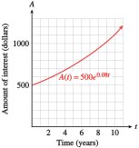

Section 10.3 The Natural Base
There is another base for logarithms and exponential functions that is often used in applications. This base is an irrational number called \(e\text{,}\) where
The number \(e\) is essential for many advanced topics, and it is often called the natural base.
Subsection The Natural Exponential Function
The natural exponential function is the function \(f(x) = e^x\text{.}\) Values for \(e^x\) can be obtained with a calculator using the \(\boxed{e^x}\) key ( 2nd LN on most calculators). For example, you can evaluate \(e^1\) by pressing
2nd LN \(1\)
to confirm the value of \(e\) given above.
Notebook 10.37. Practice 1.
Because \(e\) is a number between \(2\) and \(3\text{,}\) the graph of \(f(x) = e^x\) lies between the graphs of \(y = 2^x\) and \(y = 3^x\text{.}\) Compare the tables of values and the graphs of the three functions below. You can verify the table and graphs on your caclulator.
| \(x\) | \(y=2^x\) | \(y=e^x\) | \(y=3^x\) |
| \(-3\) | \(0.125\) | \(0.050\) | \(0.037\) |
| \(-2\) | \(0.250\) | \(0.135\) | \(0.111\) |
| \(-1\) | \(0.500\) | \(0.368\) | \(0.333\) |
| \(0\) | \(1\) | \(1\) | \(1\) |
| \(1\) | \(2\) | \(2.718\) | \(3\) |
| \(2\) | \(4\) | \(7.389\) | \(9\) |
| \(3\) | \(8\) | \(20.086\) | \(27\) |
Notebook 10.38. QuickCheck 1.
Example 10.39.
Graph each function. How does each graph differ from the graph of \(y = e^x\text{?}\)
- \(\displaystyle g(x) = e^{x+2}\)
- \(\displaystyle h(x) = e^x + 2\)

The graph of \(g\) is shifted \(2\) units to the left of \(y = e^x\text{.}\) The graph of \(h\) is shifted \(2\) units up from \(y = e^x\text{.}\) The graphs are shown above.
Subsection The Natural Logarithmic Function
The base \(e\) logarithm of a number \(x\text{,}\) or \(\log_ e x\text{,}\) is called the natural logarithm of \(x\) and is denoted by \(\ln x\text{.}\)
The Natural Logarithm.
The natural logarithm is the logarithm base \(e\text{.}\)
The natural logarithm of \(x\) is the exponent to which \(e\) must be raised to produce \(x\text{.}\) For example, the natural logarithm of \(10\text{,}\) or \(\ln 10\text{,}\) is the solution of the equation
You can verify on your calculator that
In general, natural logs obey the same conversion formulas that work for logs to other bases.
Conversion Formulas for Natural Logs.
Notebook 10.40. QuickCheck 2.
In particular,
As is the case with exponential and log functions with other bases, the natural log function, and the natural exponential function, \(f(x) = e^x\text{,}\) "undo" each other, so they are inverse functions.
Example 10.41.
Graph \(f(x) = e^x\) and \(g(x) = \ln x\) on the same grid.
We can make a table of values for \(g(x) = \ln x\) by interchanging the columns in the table for \(f(x) = e^x\text{.}\) Plotting the points gives us the graph below.
| \(x\) | \(y=\ln x\) |
| \(0.050\) | \(-3\) |
| \(0.135\) | \(-2\) |
| \(0.368\) | \(-1\) |
| \(1\) | \(0\) |
| \(2.718\) | \(1\) |
| \(7.389\) | \(2\) |
| \(20.086\) | \(3\) |
You can see from the graph that the natural log function has only positive numbers as input values. The natural logs of negative numbers and zero are undefined. You can also see that the natural log of a number greater than 1 is positive, while the logs of fractions between 0 and 1 are negative.
Notebook 10.42. Practice 2.
The three properties of logarithms also apply to base \(e\) logarithms.
Properties of Natural Logarithms.
If \(x, y \gt 0\text{,}\) then
- \(\displaystyle \ln(xy) = \ln x + ln y\)
- \(\displaystyle \ln {\dfrac{x}{y}} = \ln x - \ln y\)
- \(\displaystyle \ln {x^n} = m \ln x\)
If \(x \le 0\text{,}\) \(\ln x\) is undefined.
And because the functions \(y=e^x\) and \(y= \ln x\) are inverse functions, the following properties are also true.
The Natural Log and \(e^x\).
Example 10.43.
Simplify each expression.
- \(\displaystyle \ln e^{0.3x}\)
- \(\displaystyle e^{2 \ln(x+3)}\)
-
The natural log is the log base \(e\text{,}\) and hence the inverse of \(e^x\text{.}\) Therefore,
\begin{equation*} \ln {e^{0.3x}} = 0.3x \end{equation*} -
First, we simplify the exponent using the third property of logs to get
\begin{equation*} 2 \ln(x + 3) = \ln(x + 3)^2 \end{equation*}Then \(e^{2 \ln(x+3)} = e^{\ln(x+3)^2} = (x + 3)^2\text{.}\)
Notebook 10.44. Practice 3.
Subsection Solving Equations
We use the natural logarithm to solve exponential equations with base \(e\text{.}\) The techniques we've learned for solving other exponential equations also apply to equations with base \(e\text{.}\)
Example 10.45.
Solve each equation for \(x\text{.}\)
- \(\displaystyle e^x = 0.24\)
- \(\displaystyle \ln x = 3.5\)
-
We convert the equation to logarithmic form and evaluate using a calculator.
\begin{equation*} x = \ln 0.24 \approx -1.427 \end{equation*} -
We convert the equation to exponential form and evaluate.
\begin{equation*} x = e^{3.5} \approx 33.1155 \end{equation*}
Notebook 10.46. Practice 4.
Notebook 10.47. QuickCheck 3.
To solve more complicated exponential equations, we isolate the power on one side of the equation before converting to logarithmic form.
Example 10.48.
Solve \(140 = 20 e^{0.4x}\text{.}\)
First, we divide each side by \(20\) to obtain
Then we convert the equation to logarithmic form.
Rounded to four decimal places, \(x \approx 4.8648\text{.}\)
Note 10.49.
We can also solve the equation in Example 10.48,
by taking the natural logarithm of both sides. This gives us
because \(\ln{e^a} = a\) for any number \(a\text{.}\) We then proceed with the solution as before.
Notebook 10.50. Practice 5.
Example 10.51.
Solve \(P = \dfrac{a}{1 + be^{-kt}}\) for \(t\text{.}\)
We multiply both sides of the equation by the denominator, \(1 + be^{-kt}\text{,}\) to get
Then we isolate the power, \(e^{-kt}\text{,}\) as follows:
Next, we take the natural logarithm of both sides to get
and recall that \(\ln {e^x} = x\) to simplify the left side.
Finally, we divide both sides by \(-k\) to solve for \(t\text{.}\)
Notebook 10.52. Practice 6.
Subsection Exponential Growth and Decay
Recall that functions of the form
describe exponential growth when \(b \gt 1\) and exponential decay when \(0 \lt b \lt 1\text{.}\) Exponential growth and decay can also be modeled by functions of the form
where we have substituted \(e^k\) for the growth factor \(b\text{,}\) so that
We can find the value of \(k\) by solving the equation \(b = e^k\) for \(k\text{,}\) to get \(k = \ln b\text{.}\)
For instance, consider a colony of bacteria that grows according to the formula
We can express this function in the form \(P(t) = 100 \cdot \alert{e^{kt}}\) if we set
Thus, the growth law for the colony of bacteria can be written
By graphing both functions on your calculator, you can verify that
are just two ways of writing the same function.
Example 10.53.
From 1990 to 2000, the population of Clark County, Nevada, grew by \(6.4\%\) per year.
- What was the growth factor for the population of Clark County from 1990 to 2000? If the population of Clark County was \(768,000\) in 1990, write a formula for the population \(t\) years later.
- Write a growth formula for Clark County using base \(e\text{.}\)
-
The growth factor was \(b = 1 + r = 1.064\text{.}\) The population \(t\) years later was
\begin{equation*} P(t) = 768,000 (1.064)^t \end{equation*} -
We use the formula \(P(t) = P_0 \cdot e^{kt}\text{,}\) where \(e^k = 1.064\text{.}\) Solving for \(k\text{,}\) we find
\begin{equation*} k = \ln 1.064 = 0.062 \end{equation*}so \(P(t) = 768,000 e^{0.062t}\text{.}\)
Notebook 10.54. Practice 7.
If \(k\) is negative, then \(e^k\) is a fraction less than \(1\text{.}\) For example, if \(k = -2\text{,}\)
Thus, for negative values of \(k\text{,}\) the function \(P(t) = P_0 e^{kt}\) describes exponential decay.
Exponential Growth and Decay.
The function
describes exponential growth if \(k \gt 0\text{,}\) and exponential decay if \(k \lt 0\text{.}\)
Notebook 10.55. QuickCheck 4.
Example 10.56.
Express the decay law \(N(t) = 60 (0.8)^t\) in the form \(N(t) = N_0 e^{kt}\text{.}\)
For this decay law, \(N_0 = 60\) and \(b = 0.8\text{.}\) We would like to find a value for \(k\) so that \(e^k = b = 0.8\text{,}\) that is, we must solve the equation
Replacing \(b\) with \(e^k\text{,}\) we find that the decay law is
Notebook 10.57. Practice 8.

Subsection Continuous Compounding
Some savings institutions offer accounts on which the interest is compounded continuously. The amount accumulated in such an account after \(t\) years at interest rate \(r\) is given by the function
where \(P\) is the principal invested.
Example 10.58.
Suppose you invest $500 in an account that pays 8% interest compounded continuously. You leave the money in the account without making any additional deposits or withdrawals.
- Write a formula that gives the value of your account \(A(t)\) after \(t\) years.
- Make a table of values showing \(A(t)\) for the first \(5\) years.
- Graph the function \(A(t)\text{.}\)
- How much will the account be worth after \(10\) years?
- How long will it be before the account is worth $\(1000\text{?}\)
- We substitute \(500\) for \(P\text{,}\) and \(0.08\) for \(r\) to find\begin{equation*} A(t) = 500e^{0.08t} \end{equation*}
-
We evaluate the formula for \(A(t)\) to obtain a table.
\(t\) \(A(t)\) \(0\) \(500\) \(1\) \(541.64\) \(2\) \(586.76\) \(3\) \(635.62\) \(4\) \(688.56\) \(5\) \(745.91\)  - The graph of \(A(t)\) is shown above.
- We evaluate \(A(t)\) for \(t = 10\text{.}\)\begin{align*} A(10) \amp= 500 e^{0.08(10)}\\ \amp = 500 e^{0.8}\\ \amp \approx 500(2.2255) = 1112.77 \end{align*}The account will be worth $\(1112.77\) after \(10\) years.
- We substitute \(1000\) for \(A(t)\) and solve the equation.\begin{align*} 1000 \amp= 500 e^{0.08t}\amp\amp \blert{\text{Divide both sides by 500.}}\\ 2 \amp = e^{0.08t}\amp\amp \blert{\text{Take natural log of both sides.}}\\ \ln 2 \amp= \ln e^{0.08t} = 0.08t\amp\amp \blert{\text{Divide both sides by 0.08.}}\\ t \amp= \frac{\ln 2}{0.08}\approx 8.6643 \end{align*}The account will be worth $\(1000\) after approximately \(8.7\) years.
Notebook 10.59. Practice 9.
Exercises Homework 10.3
For Problems 1-4, use your calculator to complete the table for each function. Then choose a suitable window and graph the function.
| \(x\) | \(-10\) | \(-5\) | \(0\) | \(5\) | \(10\) | \(15\) | \(20\) |
| \(f(x)\) | \(\hphantom{0000}\) | \(\hphantom{0000}\) | \(\hphantom{0000}\) | \(\hphantom{0000}\) | \(\hphantom{0000}\) | \(\hphantom{0000}\) | \(\hphantom{0000}\) |
1.
\(f(x)=e^{0.2x} \)
2.
\(f(x)=e^{0.6x} \)
3.
\(f(x)= e^{-0.3x} \)
4.
\(f(x)=e^{-0.1x} \)
For Problems 5-6, simplify.
5.
\(\displaystyle \ln e^2\)
\(\displaystyle e^{\ln 5t} \)
\(\displaystyle e^{-\ln x} \)
\(\displaystyle \ln \sqrt{e} \)
6.
\(\displaystyle \ln e^{x^4}\)
\(\displaystyle e^{3 \ln x} \)
\(\displaystyle e^{\ln x -\ln y} \)
\(\displaystyle \ln \left(\dfrac{1}{e^{2t}} \right) \)
For Problems 7â10, solve for \(x\text{.}\) Round your answers to two decimal places.
7.
\(\displaystyle e^x=1.9\)
\(\displaystyle e^x=45\)
\(\displaystyle e^x=0.3\)
8.
\(\displaystyle e^x=2.1\)
\(\displaystyle e^x=60\)
\(\displaystyle e^x=0.9\)
9.
\(\displaystyle \ln x=1.42\)
\(\displaystyle \ln x = 0.63\)
\(\displaystyle \ln x = -2.6\)
10.
\(\displaystyle \ln x=2.03\)
\(\displaystyle \ln x = 0.59\)
\(\displaystyle \ln x = -3.4\)
11.
The number of bacteria in a culture grows according to the function
where \(N_0\) is the number of bacteria present at time \(t = 0\) and \(t\) is the time in hours.
Write a growth law for a sample in which \(6000\) bacteria were present initially.
Make a table of values for \(N(t)\) in \(5\)-hour intervals over the first \(30\) hours.
Graph \(N(t) \text{.}\)
How many bacteria were present at \(t = 24\) hours?
How much time must elapse (to the nearest tenth of an hour) for the original \(6000\) bacteria to increase to \(100,000\text{?}\)
12.
Hope invests \(\$2000\) in a savings account that pays \(5\frac{1}{2}\%\) annual interest compounded continuously.
Write a formula that gives the amount of money \(A(t)\) in Hopeâs account after \(t\) years.
Make a table of values for \(A(t)\) in \(2\)-year intervals over the first \(10\) years.
Graph \(A(t) \text{.}\)
How much will Hope's account be worth after \(7\) years?
How long will it take for the account to grow to \(\$5000\text{?}\)
13.
The intensity, \(I\) (in lumens), of a light beam after passing through \(t\) centimeters of a filter having an absorption coefficient of \(0.1\) is given by the function
Graph \(I (t)\text{.}\)
What is the intensity (to the nearest tenth of a lumen) of a light beam that has passed through \(0.6\) centimeter of the filter?
How many centimeters (to the nearest tenth) of the filter will reduce the illumination to \(800\) lumens?
14.
X-rays can be absorbed by a lead plate so that
where \(I_0\) is the X-ray count at the source and \(I (t)\) is the X-ray count behind a lead plate of thickness \(t\) inches.
Graph \(I (t)\text{.}\)
What percent of an X-ray beam will penetrate a lead plate \(\frac{1}{2}\) inch thick?
How thick should the lead plate be in order to screen out \(70\%\) of the X-rays?
For problems 15-18, express each exponential function in the form \(P(t) = P_0b^t\text{.}\) Is the function increasing or decreasing? What is itsinitial value?
15.
\(P(t) = 20e^{0.4t}\)
16.
\(P(t)=0.8 e^{1.3t} \)
17.
\(P(t) = 6500e^{-2.5t}\)
18.
\(P(t)=1.7 e^{-0.02t} \)
19.
-
Fill in the table, rounding your answers to four decimal places.
\(x\) \(0\) \(0.5\) \(1\) \(1.5\) \(2\) \(2.5\) \(e^x\) \(\phantom{000} \) \(\phantom{000}\) \(\phantom{000}\) \(\phantom{000}\) \(\phantom{000}\) \(\phantom{000}\) Compute the ratio of each function value to the previous one. Explain the result.
20.
-
Fill in the table, rounding your answers to four decimal places.
\(x\) \(0\) \(2\) \(4\) \(6\) \(8\) \(10\) \(e^x\) \(\phantom{000} \) \(\phantom{000}\) \(\phantom{000}\) \(\phantom{000}\) \(\phantom{000}\) \(\phantom{000}\) Compute the ratio of each function value to the previous one. Explain the result.
21.
-
Fill in the table, rounding your answers to the nearest integer.
\(x\) \(0\) \(0.6931\) \(1.3863\) \(2.0794\) \(2.7726\) \(3.4657\) \(4.1589\) \(e^x\) \(\phantom{000} \) \(\phantom{000}\) \(\phantom{000}\) \(\phantom{000}\) \(\phantom{000}\) \(\phantom{000}\) \(\phantom{000}\) Subtract each \(x\)-value from the next one. Explain the result.
22.
-
Fill in the table, rounding your answers to the nearest integer.
\(x\) \(0\) \(1.0986\) \(2.1972\) \(3.2958\) \(4.3944\) \(5.4931\) \(6.5917\) \(e^x\) \(\phantom{000} \) \(\phantom{000}\) \(\phantom{000}\) \(\phantom{000}\) \(\phantom{000}\) \(\phantom{000}\) \(\phantom{000}\) Subtract each \(x\)-value from the next one. Explain the result.
For Problems 23â30, solve. Round your answers to two decimal places.
23.
\(6.21 = 2.3e^{1.2x}\)
24.
\(22.26 = 5.3e^{0.4x}\)
25.
\(6.4 = 20e^{0.3x} - 1.8 \)
26.
\(4.5 = 4e^{2.1x} + 3.3 \)
27.
\(46.52 = 3.1e^{1.2x} + 24.2 \)
28.
\(1.23 = 1.3e^{2.1x} - 17.1 \)
29.
\(16.24 = 0.7e^{-1.3x} - 21.7 \)
30.
\(55.68 = 0.6e^{-0.7x} + 23.1 \)
For Problems 31-36, solve the equation for the specified variable.
31.
\(y = e^{kt},~~\) for \(t\)
32.
\(\dfrac{T}{R} = e^{t/2},~~\) for \(t\)
33.
\(y = k(1-e^{-t}),~~\) for \(t\)
34.
\(B - 2 = (A + 3)e^{-t/3},~~\) for \(t\)
35.
\(T = T_0 \ln(k + 10),~~\) for \(k\)
36.
\(P = P_0 + \ln 10k,~~\) for \(k\)
37.
-
Fill in the table, rounding your answers to three decimal places.
\(n\) \(0.39\) \(3.9\) \(39\) \(390\) \(\ln n\) \(\hphantom{0000} \) \(\hphantom{0000} \) \(\hphantom{0000} \) \(\hphantom{0000} \) Subtract each natural logarithm in your table from the next one. (For example, compute \(\ln 3.9 - \ln 0.39\text{.}\)) Explain the result.
38.
-
Fill in the table, rounding your answers to three decimal places.
\(n\) \(0.64\) \(6.4\) \(64\) \(640\) \(\ln n\) \(\hphantom{0000} \) \(\hphantom{0000} \) \(\hphantom{0000} \) \(\hphantom{0000} \) Subtract each natural logarithm in your table from the next one. (For example, compute \(\ln 6.4 - \ln 0.64\text{.}\)) Explain the result.
39.
-
Fill in the table, rounding your answers to three decimal places.
\(n\) \(2\) \(4\) \(8\) \(16\) \(\ln n\) \(\hphantom{0000} \) \(\hphantom{0000} \) \(\hphantom{0000} \) \(\hphantom{0000} \) Divide each natural logarithm in your table by \(\ln 2\text{.}\) Explain the result.
40.
-
Fill in the table, rounding your answers to three decimal places.
\(n\) \(5\) \(25\) \(125\) \(625\) \(\ln n\) \(\hphantom{0000} \) \(\hphantom{0000} \) \(\hphantom{0000} \) \(\hphantom{0000} \) Divide each natural logarithm in your table by \(\ln 5\text{.}\) Explain the result.
For Problems 41â46,
Express each growth or decay law in the form \(N(t) = N_0e^{kt}\text{.}\)
Check your answer by graphing both forms of the function on the same axes. Do they have the same graph?
41.
\(N(t) = 100\cdot 2^t\)
42.
\(N(t) = 50\cdot 3^t\)
43.
\(N(t) = 1200(0.6)^t\)
44.
\(N(t) = 300(0.8)^t\)
45.
\(N(t) = 10(1.15)^t\)
46.
\(N(t) = 1000(1.04)^t\)
47.
The population of Citrus Valley was \(20,000\) in \(2000\text{.}\) In \(2010\text{,}\) it was \(35,000\text{.}\)
What is \(P_0\) if \(t = 0\) in \(2000\text{?}\)
Use the population in \(2010\) to find the growth factor \(e^k\text{.}\)
Write a growth law of the form \(P(t) = P_0 e^{kt}\) for the population of Citrus Valley.
If it continues at the same rate of growth, what will the population be in \(2030\text{?}\)
48.
A copy of Time magazine cost $\(1.50\) in \(1981.~\) In \(1988\text{,}\) the cover price had increased to $\(2.00\text{.}\)
What is \(P_0\) if \(t = 0\) in \(1981\text{?}\)
Use the price in \(1988\) to find the growth factor \(e^k\text{.}\)
Find a growth law of the form \(P(t) = P_0e^{kt}\) for the price of Time.
In \(1999\text{,}\) a copy of Time cost $\(3.50\text{.}\) Did the price of the magazine continue to grow at the same rate from \(1981\) to \(1999\text{?}\)
49.
Cobalt-60 is a radioactive isotope used in the treatment of cancer. A \(500\)-milligram sample of cobalt-60 decays to \(385\) milligrams after \(2\) years.
Using \(P_0 = 500\text{,}\) find the decay factor \(e^k\) for cobalt-60.
Write a decay law \(N(t) = N_0e^{kt}\) for cobalt-60.
How much of the original sample will be left after \(10\) years?
50.
Weed seeds can survive for a number of years in the soil. An experiment on cultivated land found \(155\) million weed seeds per acre, and in the following years the experimenters prevented the seeds from coming to maturity and producing new weeds. Four years later, there were \(13.6\) million seeds per acre. (Source: Burton, 1998)
Find the annual decay factor \(e^k\) for the number of weed seeds in the soil.
Write an exponential formula with base \(e\) for the number of weed seeds that survived after \(t\) years.
Problems 51â58 are about doubling time and half-life.
51.
Delbert invests $\(500\) in an account that pays \(9.5\%\) interest compounded continuously.
Write a formula for \(A(t)\) that gives the amount of money in Delbert's account after \(t\) years.
How long will it take Delbert's investment to double to $\(1000\text{?}\)
How long will it take Delbert's money to double again, to $\(2000\text{?}\)
Graph \(A(t)\) and illustrate the doubling time on your graph.
Choose any point \((t_1, A_1)\) on the graph, then find the point on the graph with vertical coordinate \(2A_1\text{.}\) Verify that the difference in the \(t\)-coordinates of the two points is the doubling time.
52.
The growth of plant populations can be measured by the amount of pollen they produce. The pollen from a population of pine trees that lived more than \(9500\) years ago in Norfolk, England, was deposited in the layers of sediment in a lake basin and dated with radiocarbon techniques.
The figure shows the rate of pollen accumulation plotted against time, and the fitted curve \(P(t) = 650e^{0.00932t}\text{.}\) (Source: Burton, 1998)
What was the annual rate of growth in pollen accumulation?
Find the doubling time for the pollen accumulation, that is, the time it took for the accumulation rate to double.
By what factor did the pollen accumulation rate increase over a period of \(500\) years?
53.
Technetium-99m (Tc-99m) is an artificially produced radionuclide used as a tracer for producing images of internal organs such as the heart, liver, and thyroid. A solution of Tc-99m with initial radioactivity of \(10,000\) becquerels (Bq) decays according to the formula
where \(t\) is in hours.
How long will it take the radioactivity to fall to half its initial value, or \(5000\) Bq?
How long will it take the radioactivity to be halved again?
Graph \(N(t)\) and illustrate the half-life on your graph.
Choose any point \((t_1, N_1)\) on the graph, then find the point on the graph with vertical coordinate \(0.5N_1\text{.}\) Verify that the difference in the \(t\)-coordinates of the two points is the half-life.
54.
All living things contain a certain amount of the isotope carbon-14. When an organism dies, the carbon-14 decays according to the formula
where \(t\) is measured in years. Scientists can estimate the age of an organic object by measuring the amount of carbon-14 remaining.
When the Dead Sea scrolls were discovered in 1947, they had \(78.8\%\) of their original carbon-14. How old were the Dead Sea scrolls then?
What is the half-life of carbon-14, that is, how long does it take for half of an object's carbon-14 to decay?
55.
The half-life of iodine-131 is approximately \(8\) days.
If a sample initially contains \(N_0\) grams of iodine-131, how much will it contain after \(8\) days? How much will it contain after \(16\) days? After \(32\) days?
Use your answers to part (a) to sketch a graph of \(N(t)\text{,}\) the amount of iodine-131 remaining, versus time. (Choose an arbitrary height for \(N_0\) on the vertical axis.)
Calculate \(k\text{,}\) and hence find a decay law of the form \(N(t) = N_0e^{kt}\text{,}\) where \(k \lt 0\text{,}\) for iodine-131.
56.
The half-life of hydrogen-3 is \(12.5\) years.
If a sample initially contains \(N_0\) grams of hydrogen-3, how much will it contain after \(12.5\) years? How much will it contain after \(25\) years?
Use your answers to part (a) to sketch a graph of \(N(t)\text{,}\) the amount of hydrogen-3 remaining, versus time. (Choose an arbitrary height for \(N_0\) on the vertical axis.)
Calculate \(k\text{,}\) and hence find a decay law of the form \(N(t) = N_0e^{kt}\text{,}\) where \(k\lt 0\text{,}\) for hydrogen-3.
57.
A Geiger counter measures the amount of radioactive material present in a substance. The table shows the count rate for a sample of iodine-128 as a function of time. (Source: Hunt and Sykes, 1984)
| Time (min) | \(0\) | \(10\) | \(20\) | \(30\) | \(40\) | \(50\) | \(60\) | \(70\) | \(80\) | \(90\) |
| Counts/sec | \(120\) | \(90\) | \(69\) | \(54\) | \(42\) | \(33\) | \(25\) | \(19\) | \(15\) | \(13\) |
Graph the data and use your calculator's exponential regression feature to fit a curve to them.
Write your equation in the form \(G(t) = G_0e^{kt}\text{.}\)
Calculate the half-life of iodine-128.
58.
The table shows the count rate for sodium-24 registered by a Geiger counter as a function of time. (Source: Hunt and Sykes, 1984)
| Time (min) | \(0\) | \(10\) | \(20\) | \(30\) | \(40\) | \(50\) | \(60\) | \(70\) | \(80\) | \(90\) |
| Counts/sec | \(180\) | \(112\) | \(71\) | \(45\) | \(28\) | \(18\) | \(11\) | \(7\) | \(4\) | \(3\) |
Graph the data and use your calculator's exponential regression feature to fit a curve to them.
Write your equation in the form \(G(t) = G_0e^{kt}\text{.}\)
Calculate the half-life of sodium-24.